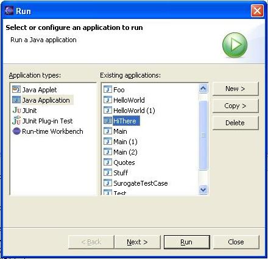
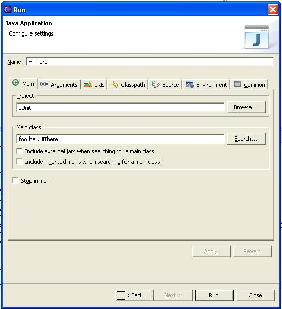

Launch Alternatives
This document describes some of the alternatives that have been considered
for the launch configurations dialog that exists in Eclispe 3.0 and prior.
The usability problems with the launch configruations dialog to be considered
are:
- Confusing and intimidating to novice users. When confronted with the dialog,
users do not know what to do. The terminology is also intimidating and ambiguous
- i.e. "create, manage, and run configurations". The user does not
know what a "configuration" is.
- Scalability issues in regards to the number of lanuch configurations types
and launch configuration instances. The tree on the left hand side of the
dialog can get large quickly.
- Making the "copy/duplicate" function more visible. The dialog
only presents "new" and "delete" buttons. The "duplciate"
action is hidden in the context menu of the tree (since there is not enough
screen realestate to show the button at the bottom of the tree).
- Consider the introdcution of launch config inheritance/templates.
A Launch Wizard
To make the launch process less intimidating, a launch wizard has been considered.
Two pages are presented. The first page allows the user to select the application
to run, and the second allows them to configure the application. The user can
launch from the first page of the wizard by pressing "Run" (the Finish
button).


The benefits of this solution:
- The wizard is less intimidating. The first page of the wizard tells the
user what to do - "select or configure an application to run". As
the user selects different types of applications the message changes with
a description of the appliaction type - for example, "Run a Java application".
The terminology of "application" is more descriptive than "launch
configuration".
- There is room for a "Copy" button on the first page of the wizard.
- The second page of the wizard has an application type specific banner image
(just a polish item really)
The drawbacks of this solution:
- Copying attributes between configurations or moving from configuration to
configuration becomes more tedious, as the user must go back and forth between
the pages to move betwen configurations.
- Non-standard buttons to enable single-click "new" and "copy"
operations (i.e. create a new config and advance to the next page automatically).